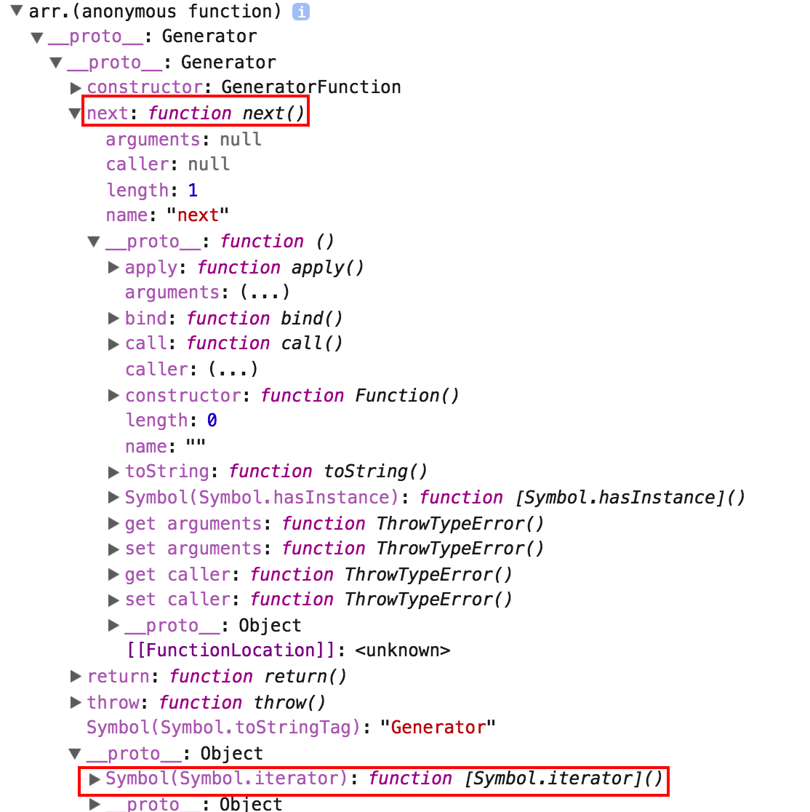

for(const a of arr) console.log(a); // 0 undefined 3 2 1

마법과도 같은 일이 일어났다. 그럼 이 마법같은 일을 낱낱이 파헤쳐보자.
Generator
일단 두 가지 케이스가 눈에 띄었다. function 키워드 뒤의 *와 yield. funcion 키워드 뒤의 *는 이 함수가 제너레이터 함수라는 것을 명시해주는 기능을 한다. 그리고 그 일반 함수가 아닌 제너레이터 함수에서는 yield 키워드를 쓸 수 있다. 이 yield는 return과 마찬가지로 값을 반환하는 기능을 하는데, 함수는 종료시키지 않는다. next를 호출할 때마다 yield 구문까지의 코드를 실행하고 yield 값을 반환하게 되는 것이다. 그리고 실행 컨텍스트를 어디선가 물고 있어서 코드의 흐름과 상관없이 next를 호출할 때마다 그 실행 결과를 보장받게 되는 것이다. 몇 가지 예제들을 통해 그 특성들을 알아보자.
1
2
3
4
5
6
7
8
9
10
11
12
13
14
15
16
17
18
19
20
21
22
23
24
25
26
27
28
29
30
31
32
33
34
35
36
const gen = function*() {
console.log('내가 실행됐니?');
yield1;
const b = yield3;
console.log(b);
const c = yield4;
console.log(c);
return4;
yield5;
};
let a = gen(); // 이터레이터 객체를 반환
// 내가 실행됐니?가 출력되고, 1을 반환
console.log(a.next());
// b에 yield 3이 할당되고, 3이 반환됨.
console.log(a.next());
// 하지만 yield 3 자체는 undefined를 반환해서 b에는 undefined가 찍힘.
// 그리고 c에 yield 4가 할당되고, 4가 반환됨.
console.log(a.next());
// 원래 c에는 yield 4가 할당돼 undefined가 찍혀야하지만, next에 매개변수를 주면 c에 새로운 값을 할당하게 됨.